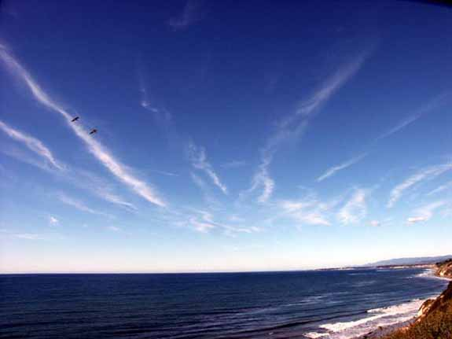

| The Tom Bearden Website |
Additional cloud anomalies |

Santa Barbara Channel, California - 11 December, 2001
| Date: Tue, 11 Dec 2001
13:11:16 -0600
Thanks Tony.
It looks like a giant
radial to which they have cut power, and so it is gradually breaking
up. When power is cut, the center part goes first, usually.
Sunday I saw an
enormous giant radial, motoring along from west to east, crossing over
Huntsville. This one was unique, in that it had multiple dynamics in
it, including one section with hemispherical half-bars facing each
other, probably meant to induce torsion and twisting in the winds, thus
generating tornadoes. Didn't get a photo as I had no camera with me.
Cheers,
Tom Hi Tom Snapped this off the back patio this morning around 10.30 am - could be a cloud radial, but there is no circular center to it. There again, it could just be the wind blowing down the coast? It had "blown out" a bit before I noticed it from my office window. I actually see them quite often here. Coincidentally, was just scanning in Mrs. Wilson's sketches for Fer-de-Lance last night. Best Tony |